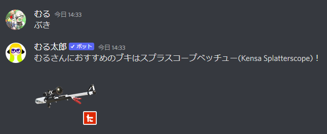

スラッシュコマンド
スラッシュコマンドとは
スラッシュコマンドとは、Discordのbotへコマンドを入力するためのものです。
Discordの仕様変更により、むる太郎では2022年9月より、これまでの「ぶき」のようなコマンドではなくスラッシュコマンドを利用することにしました。
スラッシュ(/)を入寮句することで、コマンドの一覧が表示されるので、コマンドを覚えなくても様々なbotのコマンドを入力することができるようになります。

仕様変更により、ご迷惑をおかけしますがよろしくお願いします。
スラッシュコマンドが使えない
コマンドの候補が表示されない場合
他のbotのコマンド候補は表示されるが、むる太郎の候補だけ表示されない
Botにスラッシュコマンドに関する権限が付与されていない可能性があります。
こちらからむる太郎を再度導入してください。
https://discord.com/api/oauth2/authorize?client_id=603582186175725568&permissions=2147483648&scope=bot%20applications.commands
他のbotのコマンド候補も表示されない
ユーザーにスラッシュコマンドの権限が付与されていない場合があります。
以下の手順に従って、スラッシュコマンドを有効化できます。
- サーバーの設定を開く
- 「ロール」を選択し、スラッシュコマンドを有効にしたいロールをクリックする
- 権限の中にある「アプリコマンドを使う」をONにする
上記2つを試しても表示されない
チャンネルの設定でスラッシュコマンドが無効化されている場合があります。
以下の手順に従って、スラッシュコマンドを有効化できます。
- 該当のチャンネルの設定を開く
- 「権限」に移動する
- スラッシュコマンドを有効にしたいロールの「アプリコマンドを使う」をONにする。
それでも解決しない場合
こちらからむる太郎を再度導入してください。
https://discord.com/api/oauth2/authorize?client_id=603582186175725568&permissions=2147483648&scope=bot%20applications.commands
または、こちらにある連絡先にお願いします。
/buki
全てのブキからランダムに1つ選びます
ブキのリストは https://stat.ink/api-info/weapon2 から拝借しています

/buki_all
登録したボイスチャットにいる人全員に対してブキルーレットをします
プライベートマッチやリーグマッチでブキルーレットをするときに一人ずつコマンドを打つ手間を省けます
/channelから始まるコマンドでボイスチャットを登録します
スラッシュから始まるコマンドが出てこない場合は、botにコマンド実行権限がない場合があります。
こちらにある招待リンクから再度サーバーに招待することで権限を付与できます。
チャンネル管理
/buki_allでルーレットする対象となるボイスチャットの管理をします
/channel_set {channel}
ボイスチャットを登録します
{channel}にはボイスチャットの名前またはIDを入力することができます
スマートフォン等で入力してコマンド実行した際に、変換前のひらがながbot側に送信されるDiscordの不具合が生じています
うまくいかない場合は、別の場所で入力してコピーペーストするとうまくいく場合があります
/channel_remove {channel}
ボイスチャットを登録解除します
/channel_info
登録したボイスチャットの一覧を表示します
/buki_type <ブキの種類>
指定した種類のブキからランダムに1つ選びます
ブキの種類は https://stat.ink/api-info/weapon2 のカテゴリ2から拝借しています
/gachima
ガチマッチの直近のスケジュールを3件表示します
/riguma
リーグマッチの直近のスケジュールを3件表示します
/nawabari
リーグマッチの直近のスケジュールを3件表示します
/salmon
サーモンランの直近のスケジュールを2件表示します